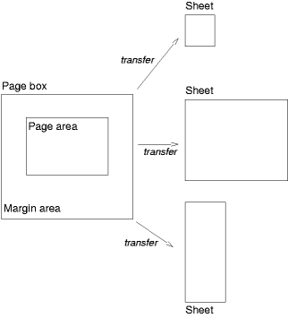

Contents
Paged media (e.g., paper, transparencies, pages that are displayed on computer screens, etc.) differ from continuous media in that the content of the document is split into one or more discrete pages. To handle pages, CSS 2.1 describes how page margins are set on page boxes, and how page breaks are declared.
The user agent is responsible for transferring the page boxes of a document onto the real sheets where the document will ultimately be rendered (paper, transparency, screen, etc.). There is often a 1-to-1 relationship between a page box and a sheet, but this is not always the case. Transfer possibilities include:
The page box is a rectangular region that contains two areas:
Authors can specify the margins of a page box inside an @page rule. An @page rule consists of the keyword "@page", followed by an optional page selector, followed by a block of declarations. The declarations in an @page rule are said to be in the page context.
The page selector specifies for which pages the declarations apply. In CSS 2.1, page selectors may designate the first page, all left pages, or all right pages
In CSS 2.1, only the margin properties ('margin-top', 'margin-right', 'margin-bottom', 'margin-left', and 'margin') apply within the page context. The following diagram shows the relationships between the sheet, page box, and page margins:
 [D]
Here is a simple example which sets all page margins on all pages:
@page {
margin: 3cm;
}
The page context has no notion of fonts, so 'em' and 'ex' units are not allowed. Percentage values on the margin properties are relative to the dimensions of the page box; for left and right margins, they refer to page box width while for top and bottom margins, they refer to page box height. All other units associated with the respective CSS 2.1 properties are allowed.
Due to negative margin values (either on the page box or on elements) or absolute positioning content may end up outside the page box, but this content may be "cut" — by the user agent, the printer, or ultimately, the paper cutter.
The computed value of box margins at the top or bottom of the page area is zero.
If a page box does not fit the target sheet dimensions, the user agent may choose to:
The user agent should consult the user before performing these operations.
When the page box is smaller than the target size, the user agent is free to place the page box anywhere on the sheet. However, it is recommended that the page box be centered on the sheet since this will align double-sided pages and avoid accidental loss of information that is printed near the edge of the sheet.
When printing double-sided documents, the page boxes on left and right pages may be different. This can be expressed through two CSS pseudo-classes that may be used in page selectors.
All pages are automatically classified by user agents into either the :left or :right pseudo-class.
@page :left {
margin-left: 4cm;
margin-right: 3cm;
}
@page :right {
margin-left: 3cm;
margin-right: 4cm;
}
Authors may also specify style for the first page of a document with the :first pseudo-class:
@page { margin: 2cm } /* All margins set to 2cm */
@page :first {
margin-top: 10cm /* Top margin on first page 10cm */
}
Properties specified in a :left or :right @page rule override those specified in an @page rule that has no pseudo-class specified. Properties specified in a :first @page rule override those specified in :left or :right @page rules.
Margin declarations on left, right, and first pages may result in different page area widths. To simplify implementations, user agents may use a single page area width on left, right, and first pages. In this case, the page area width of the first page should be used.
When formatting content in the page model, some content may end up outside the page box. For example, an element whose 'white-space' property has the value 'pre' may generate a box that is wider than the page box. Also, when boxes are positioned absolutely, they may end up in "inconvenient" locations. For example, images may be placed on the edge of the page box or 100,000 meters below the page box.
The exact formatting of such elements lies outside the scope of this specification. However, we recommend that authors and user agents observe the following general principles concerning content outside the page box:
This section describes page breaks in CSS 2.1. Five properties indicate where the user agent may or should break pages, and on what page (left or right) the subsequent content should resume. Each page break ends layout in the current page box and causes remaining pieces of the document tree to be laid out in a new page box.
| Value: | auto | always | avoid | left | right | inherit |
| Initial: | auto |
| Applies to: | block-level elements |
| Inherited: | no |
| Percentages: | N/A |
| Media: | visual, paged |
| Computed value: | as specified |
| Value: | auto | always | avoid | left | right | inherit |
| Initial: | auto |
| Applies to: | block-level elements |
| Inherited: | no |
| Percentages: | N/A |
| Media: | visual, paged |
| Computed value: | as specified |
| Value: | avoid | auto | inherit |
| Initial: | auto |
| Applies to: | block-level elements |
| Inherited: | yes |
| Percentages: | N/A |
| Media: | visual, paged |
| Computed value: | as specified |
Values for these properties have the following meanings:
Whether the first page of a document is :left or :right depends on the major writing direction of the document. A conforming user agent may interpret the values 'left' and 'right' as 'always'.
A potential page break location is typically under the influence of the parent element's 'page-break-inside' property, the 'page-break-after' property of the preceding element, and the 'page-break-before' property of the following element. When these properties have values other than 'auto', the values 'always', 'left', and 'right' take precedence over 'avoid'.
These properties only apply to block level elements that are in the normal flow of the root element.
The 'orphans' property specifies the minimum number of lines of a paragraph that must be left at the bottom of a page. The 'widows' property specifies the minimum number of lines of a paragraph that must be left at the top of a page. Examples of how they are used to control page breaks are given below.
For information about paragraph formatting, please consult the section on line boxes.
In the normal flow, page breaks can occur at the following places:
These breaks are subject to the following rules:
If the above doesn't provide enough break points to keep content from overflowing the page boxes, then rules B and D are dropped in order to find additional breakpoints.
If that still does not lead to sufficient break points, rules A and C are dropped as well, to find still more break points.
A page break must occur at (1) if, among the 'page-break-after' and 'page-break-before' properties of all the elements generating boxes that meet at this margin, there is at least one with the value 'always', 'left', or 'right'.
CSS2 does not define which of a set of allowed page breaks must be used; CSS2 does not forbid a user agent from breaking at every possible break point, or not to break at all. But CSS2 does recommend that user agents observe the following heuristics (while recognizing that they are sometimes contradictory):
Suppose, for example, that the style sheet contains 'orphans: 4', 'widows: 2', and there are 20 lines (line boxes) available at the bottom of the current page:
Now suppose that 'orphans' is '10', 'widows' is '20', and there are 8 lines available at the bottom of the current page:
Declarations in the page context obey the cascade just like normal CSS2 declarations.
Consider the following example:
@page {
margin-left: 3cm;
}
@page :left {
margin-left: 4cm;
}
Due to the higher specificity of the pseudo-class selector, the left margin on left pages will be '4cm' and all other pages (i.e., the right pages) will have a left margin of '3cm'.